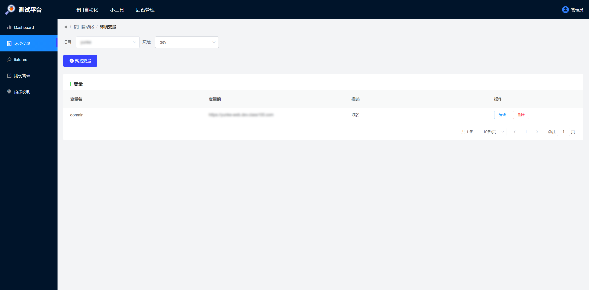
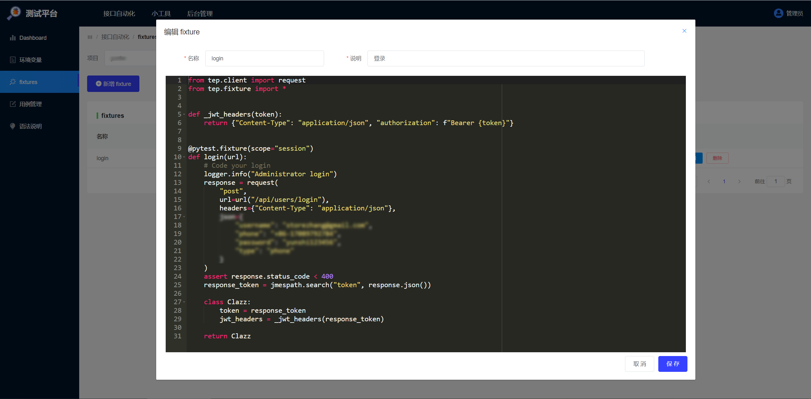
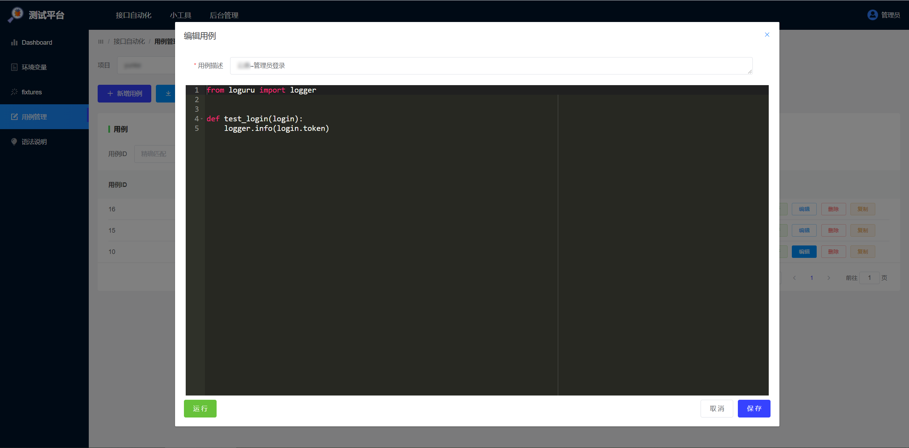
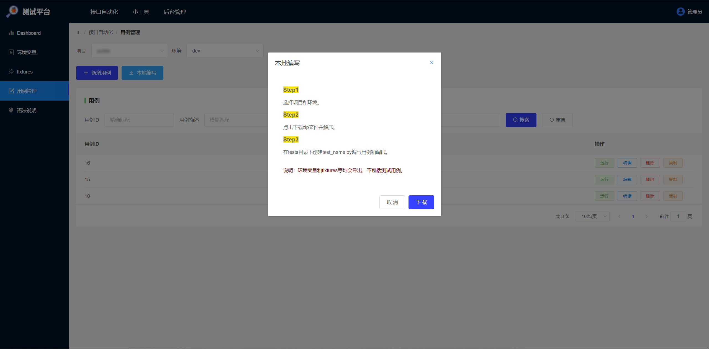
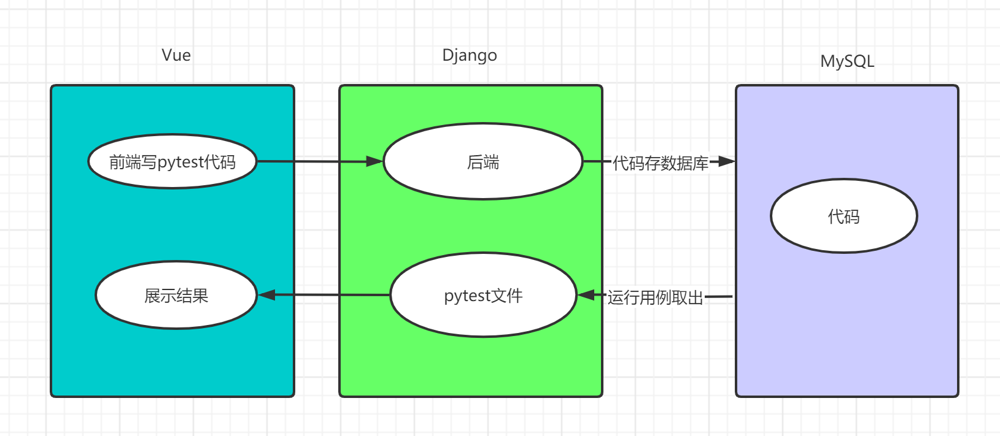
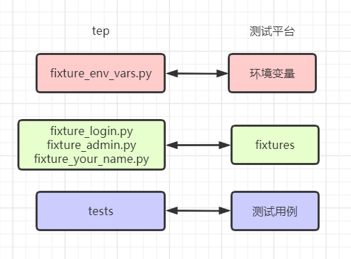
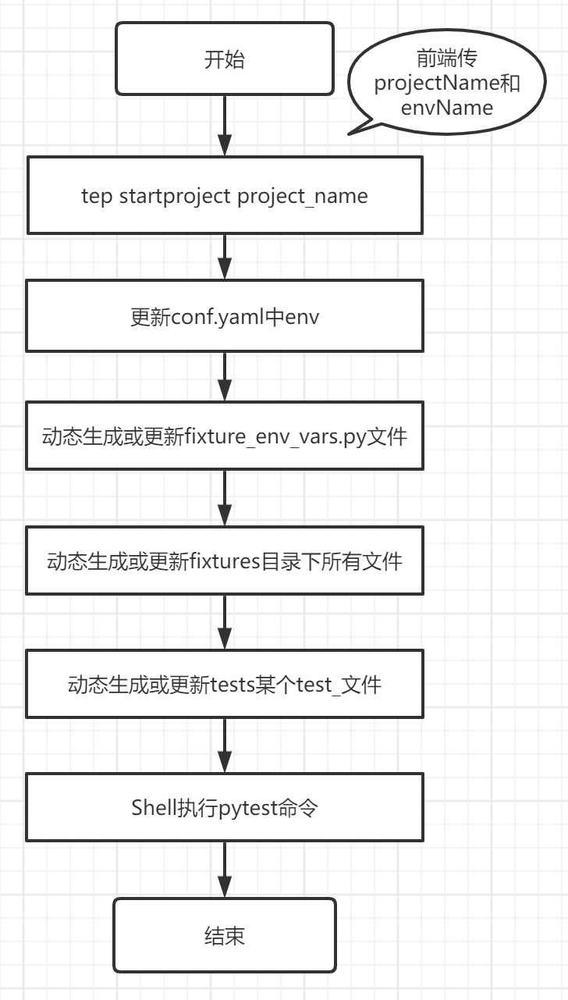

本书作者：测试开发刚哥，文章版权归个人所有，未经授权请勿转载。
测试平台，有人说它鸡肋，有人说它有用，有人说它轮子，众说纷纭，不如从自身出发，考虑是否要做测试平台：
- 第1阶段，用Python+requests写接口自动化。
- 第2阶段，选择unitttest或pytest，更熟悉pytest选了pytest。
- 第3阶段，快速搭建pytest项目脚手架，封装tep测试工具。
- 第4阶段，通过Git管理测试脚本，多分支合并代码。
- 第5阶段，去除本地环境同步麻烦，方便团队共享脚本。
需要有个测试平台。
使用篇
环境变量
环境变量是字符串键值对，全局作用域。比如不同环境不同域名：

使用：
env_vars.name。
fixtures
fixtures即pytest的fixture，可以添加自定义函数，供测试用例使用。比如封装登录接口返回token：

tep.fixture提供了urlfixture，自动拼接环境变量env_vars.domain + uri。
测试用例
在前端网页写代码，1条用例对应1个pytest的test_name.py文件。比如调用login fixture登录：

本地编写
PyCharm写代码体验更好，正确姿势是从平台下载包含环境变量和fixtures等项目结构代码，本地编写用例，调试，跑通后，粘贴到平台上共享和维护：

本地和平台环境一致，省去前期搭建，关注
tests用例。
扩展能力
用例是Python代码，理论上所有Python能写出来的，平台都能支持，比如HTTP、WebSocket、Protobuf等协议。
原理篇
pytest内核

vue2-ace-editor作为前端代码编辑组件。- 前端把代码通过HTTP请求传给后端。
- 后端把代码存入MySQL数据库。
- 运行用例，从数据库取出代码，生成pytest文件。
- Shell命令调用
pytest -s test_name.py，执行测试。 - 后端把运行结果日志返给前端展示。
之所以要折腾数据库，是因为每次部署后docker容器里面的文件会被清掉，只能动态生成。
tep脚手架
测试平台功能是从tep项目脚手架中抽取出来的：

- 把
fixture_env_vars.py做成了环境变量功能。 - 把
fixture_login.py等做成了fixtures功能。 - 把
tests做成了测试用例功能。
运行用例
整体流程如下：

tep startproject project_name
运行用例时，判断项目目录是否存在，如果不存在就调用tep startproject project_name创建项目脚手架。
更新conf.yaml中env
把前端传的当前运行环境更新到conf.yaml文件中：
env: qa
动态生成或更新fixture_env_vars.py文件
根据环境变量功能模块的数据，动态生成fixture_env_vars.py文件：
#!/usr/bin/python
## encoding=utf-8
from tep.dao import mysql_engine
from tep.fixture import *
@pytest.fixture(scope="session")
def env_vars(config):
class Clazz(TepVars):
env = config["env"]
"""Variables define start"""
# Environment and variables
mapping = {
"qa": {
"domain": "https://qa.com",
},
"release": {
"domain": "https://release.com",
}
# Add your environment and variables
}
# Define properties for auto display
domain = mapping[env]["domain"]
"""Variables define end"""
return Clazz()
动态生成或更新fixtures目录下所有文件
根据fixtures功能模块的数据，动态生成fixture_login.py等所有文件：
from tep.client import request
from tep.fixture import *
def _jwt_headers(token):
return {"Content-Type": "application/json", "authorization": f"Bearer {token}"}
@pytest.fixture(scope="session")
def login(url):
# Code your login
logger.info("Administrator login")
response = request(
"post",
url=url("/api/users/login"),
headers={"Content-Type": "application/json"},
json={
"username": "admin",
"password": "123456",
}
)
assert response.status_code < 400
response_token = jmespath.search("token", response.json())
class Clazz:
token = response_token
jwt_headers = _jwt_headers(response_token)
return Clazz
conftest.py会自动查找后
import，tests用例直接使用。
动态生成或更新tests某个test_文件
从数据库拿到用例代码，动态生成test_文件。
Shell执行pytest命令
从上一步拿到case_path，调用pytest -s case_path执行测试。
计划后续添加suite和marker两种批量执行用例方式。
小结
本文介绍了我第一次做的测试平台的使用和原理，技术栈为Vue+Django+Django REST Framework+JWT+MySQL+pytest+Git+BitBucket+Drone+Nginx+Docker+K8S，已在公司落地，还未大规模产出，由于服务端有较多磁盘IO读写，大量使用后不知道性能如何，目前来看问题不大，需要持续观察和优化。测试平台底层是pytest，用到了tep，那就叫teprunner。
参考资料：